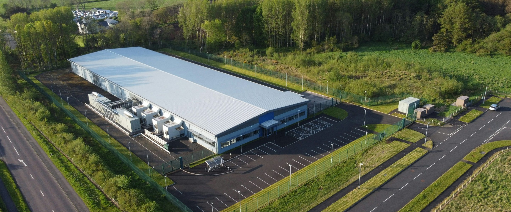
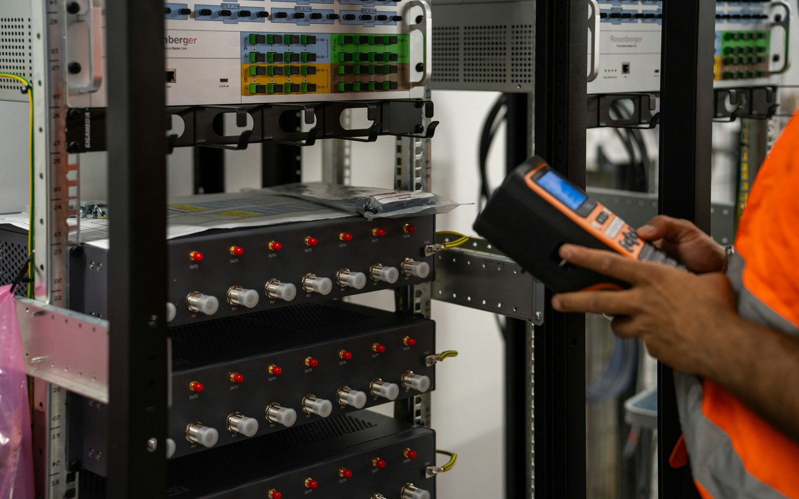

IN PLAIN ENGLISH
Infrastructure & Data Center Leaders
If someone asks what equipment is in a data center, most teams have to compare spreadsheets, tickets, diagrams, and memory. RackTrack starts with the physical rack, captures what is there, and turns it into a record people can trust.
The estate changes faster than the records.
A cabinet is moved, a switch is replaced, or a row is expanded. The change happens on the floor first, but the official records may update days or weeks later.
RackTrack captures the real cabinet.
A guided phone sweep captures the cabinet, labels, rack units, visible equipment, and source images. RackTrack converts that physical view into structured rack data.
The team gets a record it can use.
Leaders can compare sites from the same source of truth and plan capacity, budget, and change work without waiting for another manual reconciliation.

WHAT THE TEAM SEES
Clear rack evidence, not another mystery report.
- A cabinet-by-cabinet view of what is installed.
- A clearer answer to what changed since the last sweep.
- Source evidence behind the record, not just a copied value.
DECISIONS MADE EASIER
A faster refresh across multiple sites.
Bring one site or row and see how the verified record compares with your current inventory.

START SMALL